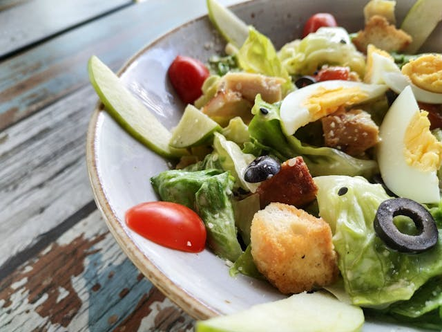

Caesar Salad

Prepare a delicious Caesar Salad with a few ingredients.This recipe is perfect as a side. It can also be a great healthy lunch option. Making a Caesar salad is quick and tasteful.
Ingredients:
- Romaine Lettuce
- Parmesan Cheese
- Crips Croutons
- Caesar Dressing
- Olive Oil
How to Make:
- Rinse lettuce in cold water
- Chill lettuce before using
- Mix lettuce, top with croutons and parmesan
- Add olive oil to taste
- Optional: Ground pepper to taste
Home